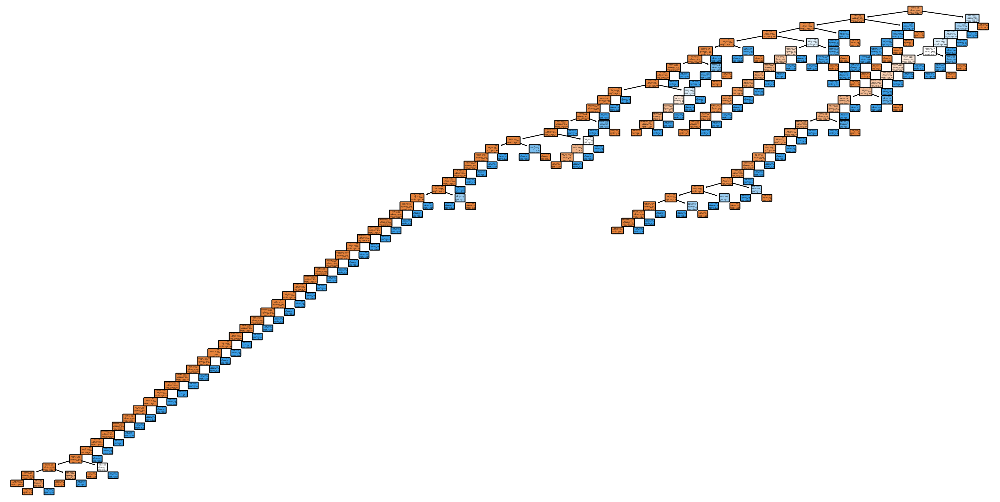

Classification is a supervised machine learning technique that attempts to predict the correct label for the given data points. There are three phases in supervised learning.
The model is trained on a subset of the data and is given both the input data and its labels.
It is then evaluated on the testing subset.
Finally, it predicts labels on new unseen data. This is called validation.
Machine learning classification algorithms are split into two types: eager learners and lazy learners. Eager learners build the model from the training dataset before making any predictions on future datasets. Lazy learners memorize the training data and refer to those past inputs and outputs to make predictions on future points. For these reasons, eager learners are typically perform faster than lazy learners.
In this blog poast we will be implementing two different classification models, decision trees and K-Nearest Neighbor. Decision trees are eager learners while K-Nearest Neighbor is a lazy learning. We will be using the SMS Spam Collection dataset from the UCI Machine Learning Repository. This dataset contains 5,574 SMS messages in English, labeled ham (legitimate) or spam. This dataset is publically avaliable on The UCI Machine Learning Repository Website.
# Load the SMS Spam Collection datasetimport pandas as pd# Load the SMS Spam Collection datasetdf = pd.read_csv("C:/Users/sarah/git/CS5805-Blog/posts/4-classification/SMSSpamCollection", sep="\t", names=["label", "message"])df.head()
label
message
0
ham
Go until jurong point, crazy.. Available only ...
1
ham
Ok lar... Joking wif u oni...
2
spam
Free entry in 2 a wkly comp to win FA Cup fina...
3
ham
U dun say so early hor... U c already then say...
4
ham
Nah I don't think he goes to usf, he lives aro...
Before we can perform classification algorithms we will first need todo some preprocessing steps. 1. Convert all text to lowercase to ensure that words are treated the same, regardless of case 2. Remove all punctuation to reduce noise 3. Remove all stop words. Stopwords are common words like ‘is’, ‘the’, ‘and’, etc. that usually don’t carry much information.
import warningswarnings.filterwarnings('ignore')import nltkfrom nltk.corpus import stopwordsfrom nltk.stem import PorterStemmerimport re# Download the stopwords from NLTKnltk.download('stopwords')stemmer = PorterStemmer()# Function to preprocess textdef preprocess(text):# Convert to lower case text = text.lower()# Remove punctuation text = re.sub('[^a-z]', ' ', text)# Remove stopwords and stem the words text =' '.join(word for word in text.split() if word notinset(stopwords.words('english')))return text# Apply the preprocessing to each messagedf['message'] = df['message'].apply(preprocess)df['message'].head()
[nltk_data] Downloading package stopwords to
[nltk_data] C:\Users\sarah\AppData\Roaming\nltk_data...
[nltk_data] Package stopwords is already up-to-date!
0 go jurong point crazy available bugis n great ...
1 ok lar joking wif u oni
2 free entry wkly comp win fa cup final tkts st ...
3 u dun say early hor u c already say
4 nah think goes usf lives around though
Name: message, dtype: object
Now we can begin performing classification.
Decision Trees
A decision tree is a supervised algorithm that has a heirarchial, tree structure. It can be visualized as a flowchart-like diagram and is made up of decision nodes and leaves. The decision nodes are where the features are evaluated and the leaves represent the final outcome.
from sklearn.feature_extraction.text import CountVectorizerfrom sklearn.model_selection import train_test_splitfrom sklearn.tree import DecisionTreeClassifierfrom sklearn.metrics import accuracy_score, confusion_matrixfrom sklearn.metrics import classification_report# Convert the text messages to a matrix of token countscv = CountVectorizer()X = cv.fit_transform(df['message']).toarray()y = df['label']# Split the data into training and testing setsX_train, X_test, y_train, y_test = train_test_split(X, y, test_size=0.2, random_state=42)# Train a Decision Tree modelclf = DecisionTreeClassifier()clf.fit(X_train, y_train)# Make predictions on the testing datay_pred = clf.predict(X_test)# Calculate accuracyaccuracy = accuracy_score(y_test, y_pred)print(f'Accuracy: {accuracy}')# Calculate confusion matrixconf_mat = confusion_matrix(y_test, y_pred)print(f'Confusion Matrix: \n{conf_mat}')
We see that the accuracy of our decision tree on the Spam Collection dataset was 97.58%. Our confusion matrix shows that 956 messages were correctly labeled ham (legitimate) and 132 were correctly labeled spam. We also see that 10 messages were legitimate but labeled spam, and 17 were spam but labeled legitimate. This dataset is 86.6% legitimate messages and 13.4% spam messages, so it is expected that the model will over classify messages as legitimate.
# Print a classification reportprint(classification_report(y_test, y_pred))
The classification report gives additional metrics on our model. We can see that the precision, the proportion of true positives predictions to the total number of postives that the model predicts, was high for both ham and spam. The recall is the proportion of true positives predictions to all true data points. Recall was very high for ham, and relatively high for spam. The F1 score is the trade-off between these two measures and again, it was very high for ham and relativley high for spam.
We can also visualize the decision model that we trained using sklean’s plot_tree function.
from sklearn.tree import plot_treeimport matplotlib.pyplot as plt# Plot the decision treeplt.figure(figsize=(20,10))plot_tree(clf, filled=True, rounded=True, class_names=['Ham', 'Spam'], feature_names=cv.get_feature_names_out())plt.show()

We see that the decision tree that we generated is very large, which makes sense seeing that the dataset contains just under 5,000 messages.
print(clf.tree_.node_count)
261
Using the built-in function, we see that there are 261 nodes in this decision tree. The number of branches is always # nodes - 1, so we also know that there are 260 branches in this tree.
K-Nearest Neighbor
K-Nearest Neighbor (KNN) is another type of supervised learning algorithm. It uses the distance between points to identify the nearest K neighbors and assign a prediction label.
First we have to select the K number of neighbors to calculate the distance to. Generally it is best practice to select an odd number for k to avoid ties in classification. For large datasets and datasets with more noise, it is usually best to select a large value for k.
A common practice of finding the optimal K is by taking the square root of the total number of samples. In our case, \(\sqrt(4827)=69.47\). We will implement KNN using K=69.
from sklearn.feature_extraction.text import CountVectorizerfrom sklearn.model_selection import train_test_splitfrom sklearn.neighbors import KNeighborsClassifierfrom sklearn.metrics import classification_report# Convert the text messages to a matrix of token countscv = CountVectorizer()X = cv.fit_transform(df['message']).toarray()y = df['label']# Split the data into training and testing setsX_train, X_test, y_train, y_test = train_test_split(X, y, test_size=0.2, random_state=42)# Train a KNN modelknn = KNeighborsClassifier(n_neighbors=69)knn.fit(X_train, y_train)# Make predictions on the testing datay_pred = knn.predict(X_test)# Calculate accuracyaccuracy = accuracy_score(y_test, y_pred)print(f'Accuracy: {accuracy}')# Calculate confusion matrixconf_mat = confusion_matrix(y_test, y_pred)print(f'Confusion Matrix: \n{conf_mat}')
We see that the accuracy on this dataset using KNN is 86.64%. The confusion matrix shows that 149 spam messages were incorrectly labeled as ham, and no ham messages were incorrectly labeled as spam.
We will attempt to find a more optimal K by rerunning the algorithm multiple times and selecting the K that gives the highest accuracy.
from sklearn.metrics import accuracy_score# List of possible K valuesk_values =list(range(3, 80))# List to store accuracy for each Kaccuracy_list = []# Loop over possible K valuesfor k in k_values: knn = KNeighborsClassifier(n_neighbors=k) knn.fit(X_train, y_train) y_pred = knn.predict(X_test) accuracy = accuracy_score(y_test, y_pred) accuracy_list.append(accuracy)# Find K that gives highest accuracyoptimal_k = k_values[accuracy_list.index(max(accuracy_list))]print(f'Optimal K is {optimal_k} with accuracy of {max(accuracy_list)}')
Optimal K is 3 with accuracy of 0.9345291479820628
From this we find that the best K is actually 3, with an accuracy of 93.45%. We will run the model and metrics one last time with this optimal K.
# Train a KNN modelknn = KNeighborsClassifier(n_neighbors=3)knn.fit(X_train, y_train)# Make predictions on the testing datay_pred = knn.predict(X_test)# Calculate accuracyaccuracy = accuracy_score(y_test, y_pred)print(f'Accuracy: {accuracy}')# Calculate confusion matrixconf_mat = confusion_matrix(y_test, y_pred)print(f'Confusion Matrix: \n{conf_mat}')
The confusion matric for our new optimal K=3 shows that, again, no ham messages were incorrectly labeled as spam and 73 spam messages were incorrectly labeled as ham.
# Print a classification reportprint(classification_report(y_test, y_pred))
Overall our decision tree achieved a higher accuracy of 97.58% while our KNN model achieved 93.45% at best. The KNN model showcased the downsides of lazy learner models, as well as the potential problems with having an unbalanced training set.